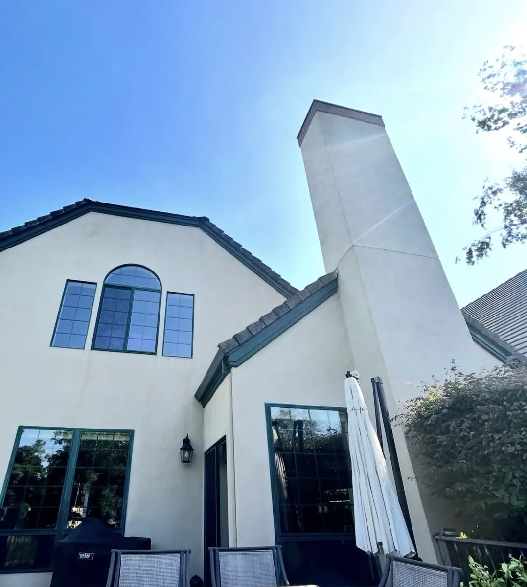
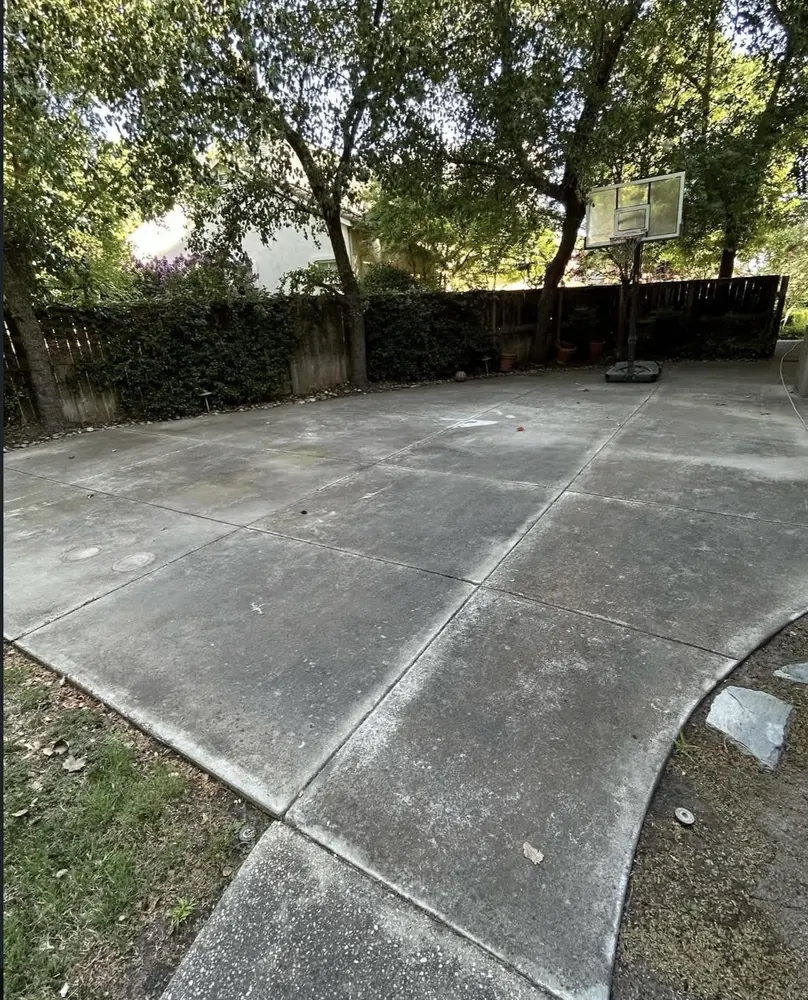
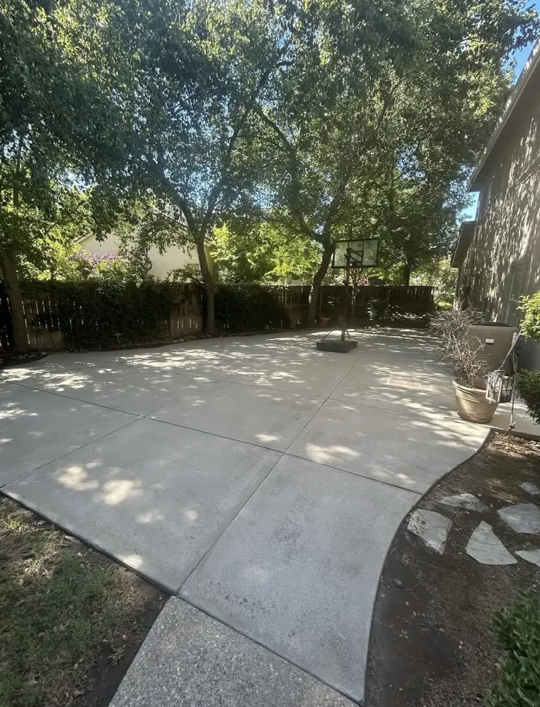
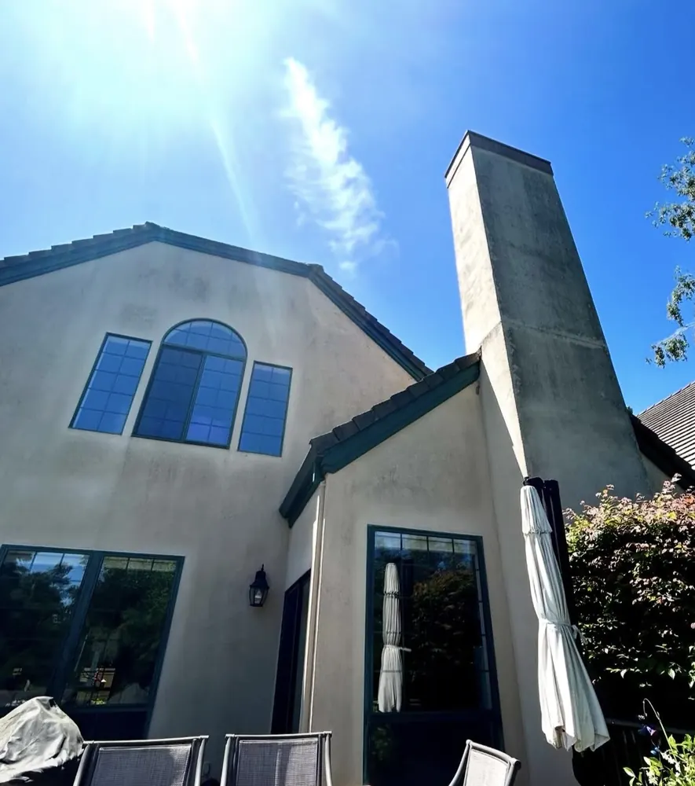
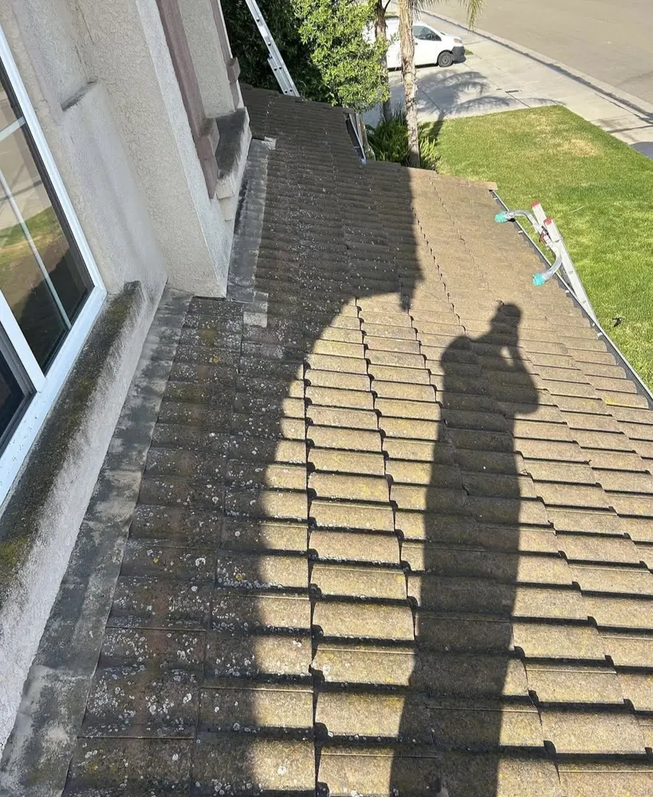
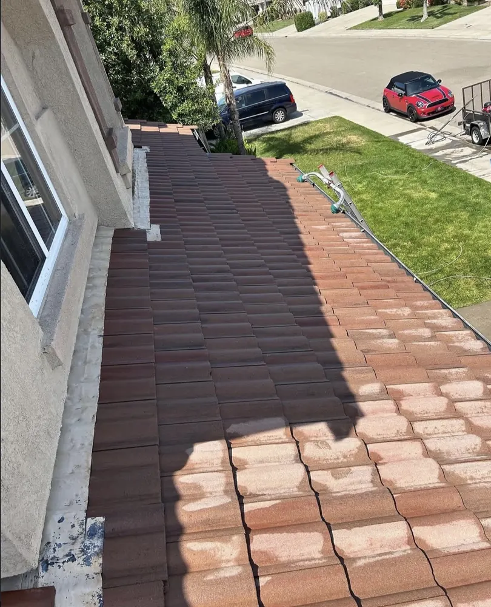

⌂
House Washing
Low-pressure cleaning for siding, stucco, trim, and exterior surfaces.
Explore service →Premium exterior cleaning delivered with precise work, clear communication, and respect for your property.

Surface-specific treatments that remove buildup safely and restore curb appeal.
Low-pressure cleaning for siding, stucco, trim, and exterior surfaces.
Explore service →Professional surface cleaning for concrete, patios, and walkways.
Explore service →Careful treatment of moss, algae, and dark organic staining.
Explore service →Clear, streak-free glass that changes the way your whole home feels.
Explore service →Spot-free cleaning to remove dust, pollen, and performance-robbing grime.
Explore service →Gutters and commercial properties cleaned with the same exacting care.
View all services →
Homeowners choose us because quality is more than a clean surface. It is arriving prepared, protecting landscaping, communicating clearly, and standing behind the work.
Every surface gets the right pressure and treatment.
Helpful updates and straightforward pricing.
Your property is treated like our own.
We make concerns right before we leave.





Share your address, service, and a few project details.
Choose an appointment that works for your schedule.
Our crew protects, treats, and cleans every agreed surface.
Walk through the results and enjoy a brighter exterior.
Replace these clearly marked placeholders with verified customer reviews.
“Customer testimonial placeholder. Add a verified review about professionalism, communication, and results.”
“Customer testimonial placeholder. Add a verified review about the quoting and scheduling experience.”
“Customer testimonial placeholder. Add a verified review about care for the property and final quality.”
Fast quote. Clear plan. Exceptional result.